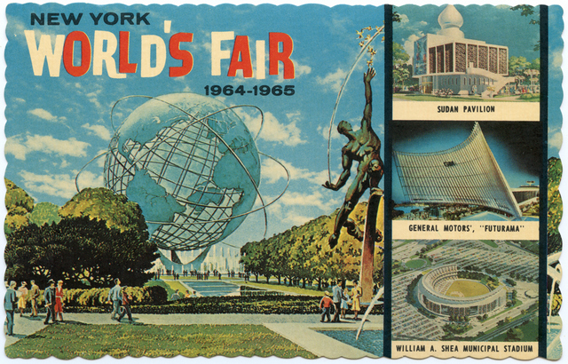

The idea to bring back the Worlds Fair was conceived by Businessmen who had gone to it back in 1939 when they were children and simply wanted to relive that moment again. Grand steps were taken to make this possible. The Fair gave American companies an opportunity to put on display not only what their vision of the future was but also what they thought was the pinnacle of American ingenuity and innovation.
